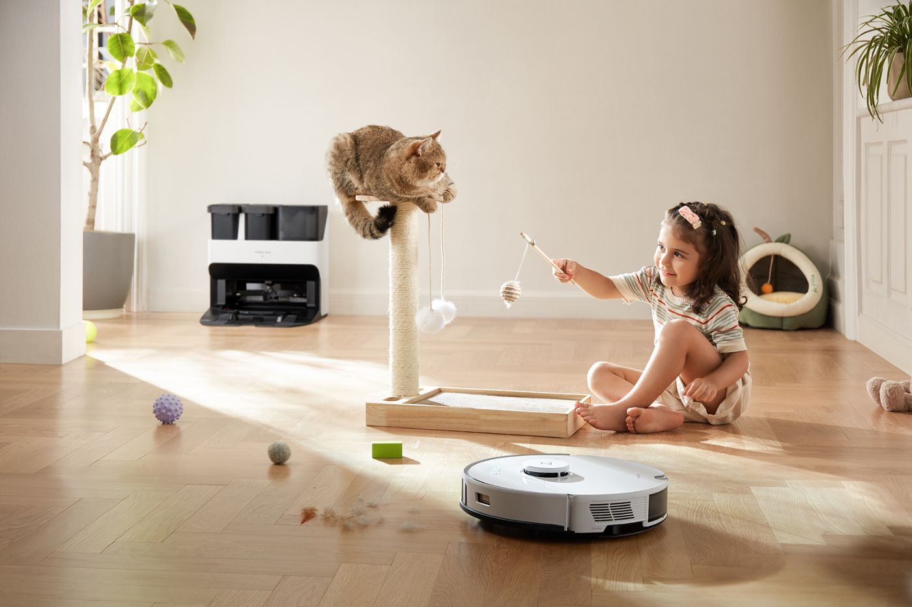

ROBOROCK S7 PRO ULTRA, LE NEC PLUS ULTRA DU MENAGE

Plus premium que premium, le bundle Roborock S7 Pro Ultra est une révolution.
Non content d’aspirer la poussière et autres saletés avec puissance (5100 Pa, rien que cela !),
comme tout bon aspirateur robot, il passe également la serpillère.
Grâce à sa technologie VibraRise®, l’aspirateur opère des frottements efficaces
à haute intensité pour nettoyer vos sols en profondeur. Rien ne lui résiste !
Ses 300 coups de brosse par minute décollent même la saleté incrustée à toute vitesse.
Le Roborock S7 Pro Ultra est aussi plus intelligent que jamais grâce à sa nouvelle unité de
traitement neuronal, son scan 3D par lumière structurée et son système LiDAR PreciSense.
Il est capable de cartographier votre logement avec précision
, malgré plusieurs étages,
et réussit à éviter tous les obstacles. Pour vous simplifier la vie,
vous pouvez même définir des programmes de nettoyage personnalisés par pièce,
par heure, par usage ou même par puissance d’aspiration. Enfin,
il est compatible avec les assistants vocaux comme Alexa, Google Home ou encore Siri.
Ainsi, vous pouvez le piloter aisément depuisl’application Roborock.